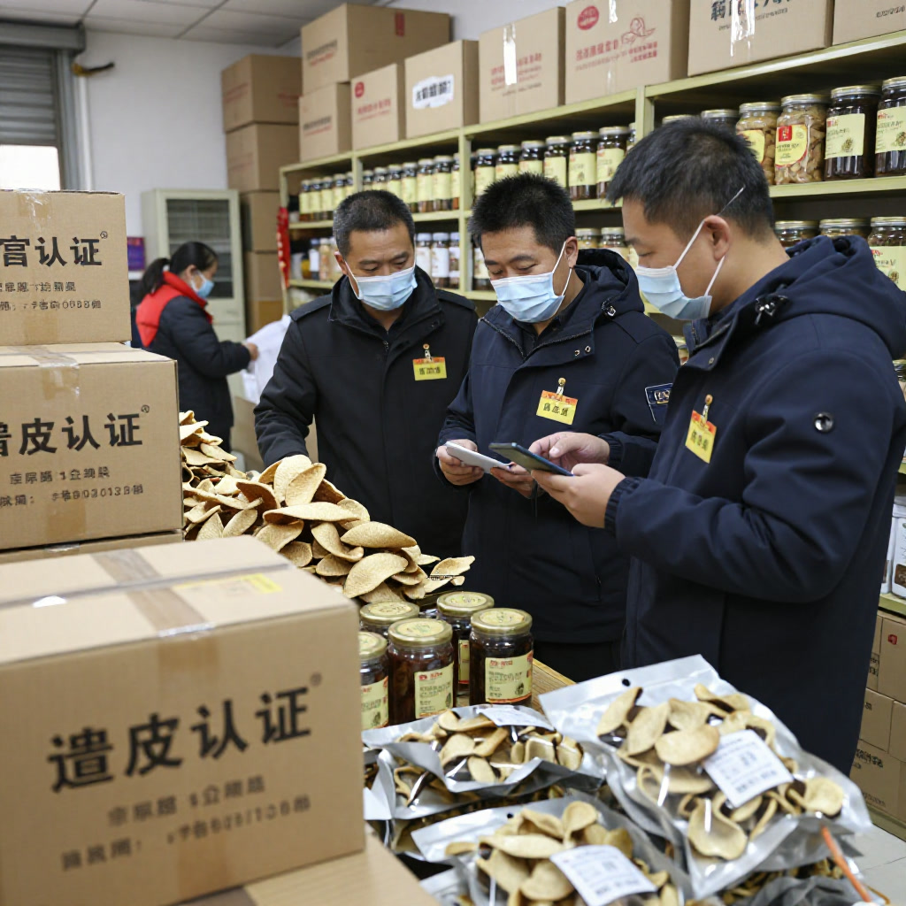
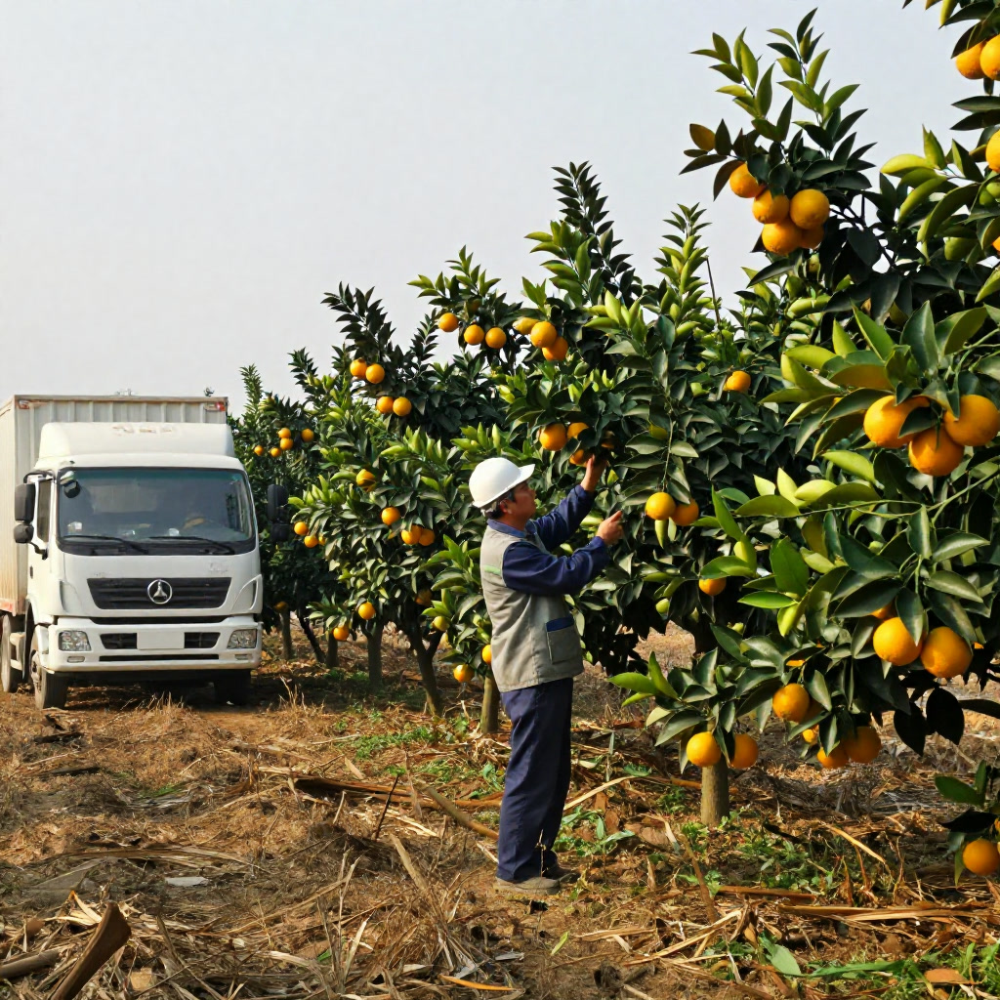

# 陈皮热点日报：采收季开锣叠加中秋倒计时，9月28日预售季与减产行情成焦点
**资料说明｜公开报道整理、非原创采访**
本文整理自公开新闻报道与行业研究，仅供资讯参考，不构成任何投资建议。文中市场数据、价格预测为转述口径，实际以官方最新公告为准。
导语： 今天是2026年9月16日，距离中秋节（9月25日）只剩9天，新会陈皮圈迎来一年中最热闹的双重节点——一方面，南方农村报、江门日报同步发声，9月28日陈皮村预售季即将开锣；另一方面，央视曝光造假事件后的整治账进入收尾，叠加2026小年减产预期与中秋陈皮礼盒热销，整个产业进入“政策＋市场＋消费”三股力量交织的关键窗口。
一、央视曝光后的整治账：6家主体被查封，22146家次检查、罚款374万
12月14日央视《财经调查》栏目曝光浦北“速成工艺皮”冒充新会老陈皮的黑色产业链后，江门市委、市政府连夜部署整治。截至2026年7月8日，全市市场监管系统累计检查相关经营主体22146家次，立案查处违法案件311宗，罚没374.69万元，新会区至今已查封6间生产经营主体。澳广视、HK01、星岛头条等港澳媒体持续跟进报道，称“一两陈皮一两金”的口碑正面临信任重塑。
值得关注的是，浦北县连夜成立联合调查组，新会区同步推进“双标”（地理标志证明商标和地理标志专用标志）全覆盖；2026年5月27日，新会区市场监管局召开《地理标志产品质量要求 新会陈皮》国家标准制定调研工作会议，江门市新会陈皮保护条例修订也加速落地。从“经验说话”到“数据证真”，新会陈皮正用区块链溯源与国家标准两把钥匙，重新锁住消费者的信任。

影响与判断： 短期内低价劣皮会被挤出市场，中高端正规品牌的议价权进一步抬升；长期看，这场整治是新会陈皮从283亿迈向500亿产值的必经之痛。
二、9月28日陈皮村预售季启动，1000万斤鲜果采购计划护航采收季
8月28日，“守标笃实·聚链共兴”2026年新会陈皮产业协同发展交流会在新会陈皮村举行。陈皮村与6家果围签订鲜果采购意向，计划收购鲜果1000万斤（500万公斤），其中古井梓富果围1700亩基地预计达成200万至250万斤合作。新会海关综合技术服务中心与陈皮村达成战略合作，共建覆盖种植、采收、加工、仓储、流通的全链条溯源体系。中国建设银行新会支行同步发布“陈皮村标准仓储陈皮质押贷款优惠方案”，把库存陈皮变成可质押资产，为柑农商户注入金融活水。
新会陈皮村将于9月28日开启2026新会陈皮预售季，整合供应链资源畅通采收季产销对接。果围负责人黄潮波感慨：“今年收购价格稳步回升，提前签约有效打消产销顾虑，给了果农定心丸。”

影响与判断： 预售季是观察全年鲜果开盘价的第一个窗口，预计头茬二红柑开秤价会比2025年同期上调15%-20%，对中长期陈皮行情形成强支撑。
三、2026新会柑小年减产成共识，“翻倍涨价”预测已喊半年
知乎、什么值得买等平台近半年持续讨论“2026减产怎么买才不亏”。多个柑园技术负责人透露，受2023年冬至极端低温（圭峰山顶录得1.1℃）叠加2024-2025年丰产后树势透支影响，2026年新会茶枝柑整体挂果量预计回落，部分核心产区减产幅度可能达20%-30%。新会海关综合技术服务中心与陈皮村共建的溯源体系，将从源头精准锁定可加工陈皮总量，进一步压缩“年份虚标、产地冒充”的空间。
价格端，2026年新会陈皮整体呈“稳中有升”态势：低年份小幅平稳上涨，5-10年中端产品受溯源政策利好价格坚挺，10年以上高端与15年以上收藏级仍以品牌溢价为主。21财经分析指出，新会陈皮竞争正从品质层面延伸至信任机制层面——下一个十年的三场硬仗是标准化、科技化、品牌化，目标锁定500亿产值。
影响与判断： 对普通消费者，3-5年中端皮是当前性价比最优的入手窗口；对收藏者，溯源数据齐全的核心产区（梅江、天马、茶坑、东甲）老皮仍具备抗通胀属性，但要警惕“低价高年份”陷阱。
四、中秋倒计时9天，陈皮月饼礼盒成送礼刚需
距离中秋节（9月25日）只剩9天，陈皮月饼礼盒进入最后冲刺。香港方面，港岛香格里拉推出“花好月圆礼物篮”（港币9,999元），内含“夏宫八十年陈皮豆沙月饼收藏礼盒”配Krug Rosé粉红香槟；君绰轩主打“三十年陈皮红豆合桃月饼”；利苑酒家热卖“迷你软心陈皮红豆月饼”。台湾方面，台北晶华“醉月广式月饼礼盒”含乌豆沙陈皮口味；奇华饼家陈皮豆沙月限量发售。
大陆市场同步火热。9月3日至9月29日，中秋茶礼陈皮普洱茶萃推出限售500套优惠；Miss O Patisserie推出陈皮红豆月饼，取货日期9月18-23日。苏州、广州、深圳多个高端酒店把陈皮纳入中秋礼篮标配，“陈皮+月饼+茶”三件套成为商务送礼主流组合。
影响与判断： 中秋陈皮消费呈现“两头热”——高端礼盒（千元以上）走品牌溢价路线，平价袋装陈皮丝、陈皮粉则走量大路线。对茶饮、烘焙跨界品牌而言，中秋是切入陈皮C端市场的最佳时机。
五、五邑大学陈皮学院落地的科技红利：陈皮多糖、无损检测迎突破
2026年3月18日，五邑大学陈皮学院正式揭牌，由五邑大学联合新会区政府、陈皮行业协会共建，聚焦陈皮年份鉴定、无损检测、活性成分提取等关键技术。中国工程院院士单杨作主旨演讲，五邑大学药学与食品工程学院科研团队展示了陈皮多糖提取纯化、高附加值产品开发等系列研究成果。
新会区相关负责人表示，接下来将持续加大在科技创新、市场开拓、品牌建设、金融赋能等方面的支持力度。新会陈皮行业协会将“数智赋能”列为2026年四大重点方向之一。2026年3月，新会陈皮数据资产在深圳数据交易所挂牌上市，“六真标准”（真源头、真产地、真年份、真品种、真生态、真陈化）以区块链技术回应“年份虚标、产地冒充”核心痛点。
影响与判断： 科技化是新会陈皮从“土特产”升级为“大健康产业”的关键变量，未来3-5年陈皮多糖、陈皮黄酮等高附加值深加工产品将成为新蓝海。
六、央视《生财有道》播出新会陈皮专题，主流媒体持续为产业正名
央视财经频道《生财有道》栏目2025年11月26日播出的新会陈皮专题——“千年酝酿，百年飘香。一片柑橘皮经时光淬炼与匠人炮制，便可化身为‘一两陈皮一两金’的养生珍品”，持续在新媒体平台发酵。视频详细呈现新会北纬22度的水土优势、传统开皮技艺、干仓陈化工序。
央视中文国际频道（CCTV-4）《健康有道》栏目则在9月持续推送陈皮养生科普：“陈皮消气滞、益脾胃、祛除体内湿气”，搭配曹文兰主任等中医专家讲解陈皮生姜、陈皮黄芪、陈皮胎菊三种搭配，针对手脚冰凉、气血虚弱、肝火旺盛人群给出针对性建议。
影响与判断： 央视两档节目形成的“产业+养生”双声道，有效对冲了造假曝光的负面影响，帮助新会陈皮在公众心智中重建“道地+健康”的双重锚点。
七、陈皮健康养生指南：秋冬养脾胃的科学饮用方式
人民网、健康时报、家医大健康等多家媒体近期更新陈皮养生科普：陈皮归脾、肺经，具有理气健脾、燥湿化痰的功效，可缓解胸闷气短、腹部胀痛、恶心呕吐等不适。现代药理学证实，陈皮富含橙皮苷、黄酮类、挥发油等活性物质，其中橙皮苷是《中国药典》判定陈皮品质的核心标准（国标含量≥3.5%）。
科学饮用指南提醒：选用自然陈化三年以上的道地陈皮效果更佳；阴虚燥咳、实热上火人群需少量饮用、间断饮用；孕期饮用前务必咨询中医师；忌空腹大量饮用，隔夜陈皮水需密封冷藏。秋冬季节中老年人每天取适量道地陈皮泡水，分多次饮用，有助于稀释痰液、减少咳嗽频率。
影响与判断： 随着秋冬养生季到来，陈皮消费将从中秋送礼场景延伸至日常家庭养生场景，推动3-5年陈皮走量稳步上升。
结语
站在9月中旬这个节点回望，新会陈皮产业正经历一场“信任重塑+科技升级+消费分层”的深度变革。9月28日陈皮村预售季是观察全年行情的第一个风向标，中秋节则是检验品牌溢价能力的最佳试金石。对从业者而言，2026年下半年的关键词只有一个：守标准。对消费者而言，认准溯源、看产区、辨真伪，比追逐高年份更重要。
一两陈皮一两金，守住道地才能守住这份金贵。
使用提示
本文整理自公开报道，仅供资讯参考，不构成食品安全、营养、收藏投资或者医疗建议。市场数据、价格判断为转述口径，实际以官方最新公告为准。选购、保存或者食用陈皮，应向正规渠道及有关主管部门核实。如有身体不适或者正在接受治疗，请咨询合资格专业人士。唔好将陈皮当成治疗方案。
常见问题
Q1：整治账的数字系咪最终结论？
唔系，文中检查家次、立案罚款等数字为截至2026年7月8日的转述口径，最新进展以市场监管部门公告为准。
Q2：减产20到30%可唔可以作囤货依据？
不可以，减产预期来自柑园技术负责人及平台讨论的转述，唔构成投资建议，实际挂果以官方及果园公告为准。
Q3：预售季开秤价上调15到20%准唔准？
唔准，呢个系影响判断部分的预期口径，实际开盘价以预售季现场及官方发布为准。
Q4：文中养生内容可以照跟吗？
唔可以照跟，养生科普只作资讯参考，特殊体质、孕期、服药人士应先咨询合资格专业人士，唔好将陈皮当成治疗方案。
Q5：礼盒价格信息会唔会过时？
会，礼盒及优惠信息有时效性，购买前请向商家核实最新价格同取货安排。
来源
1. 南方农村报、江门日报关于928预售季及鲜果采购的公开报道。 2. 央视《财经调查》《生财有道》、市场监管整治进展的公开报道。 3. 五邑大学陈皮学院、溯源体系、养生科普的公开资料整理。